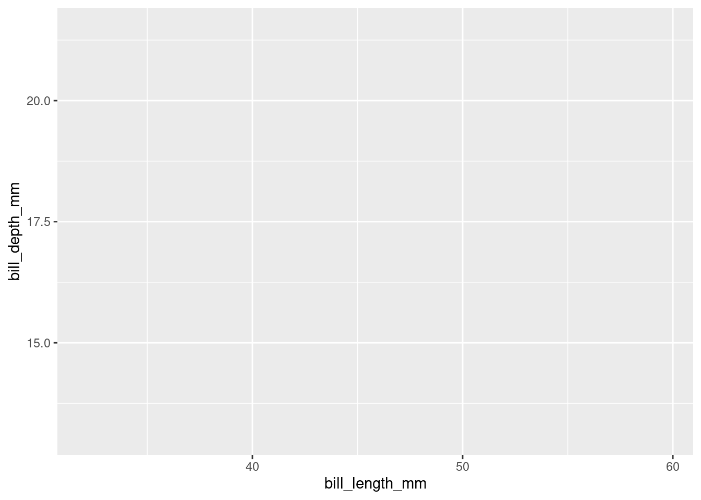
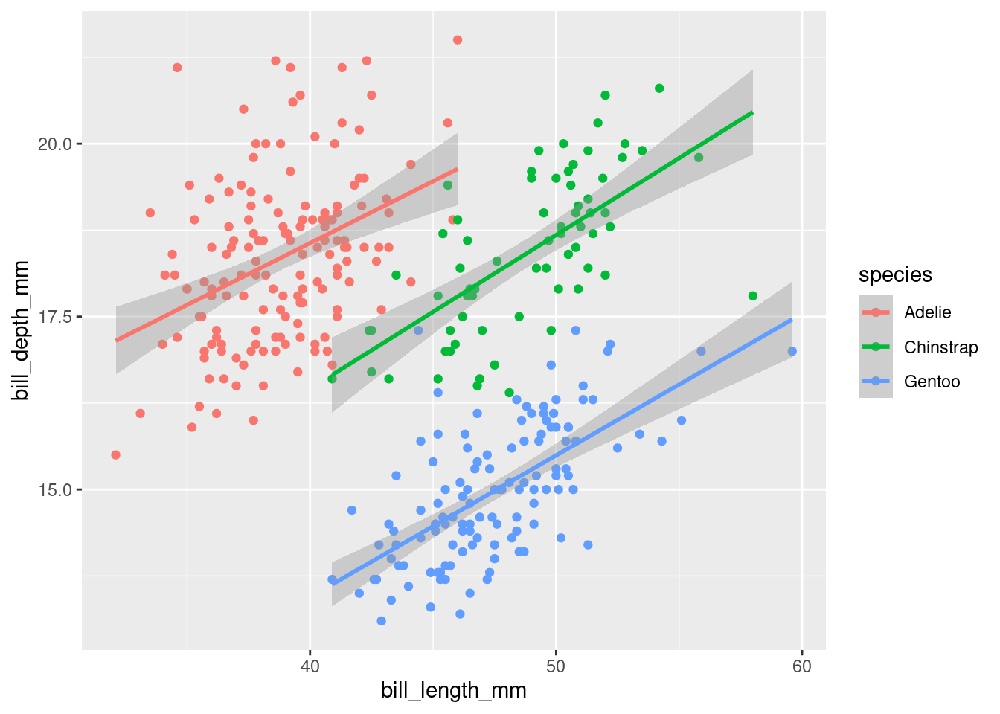
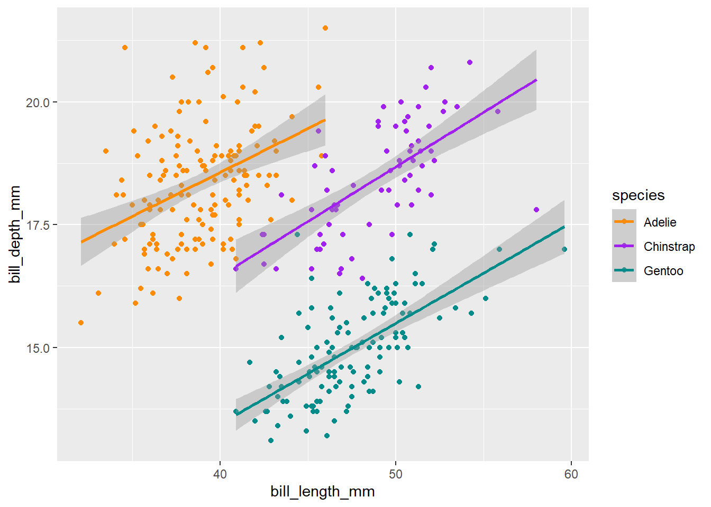
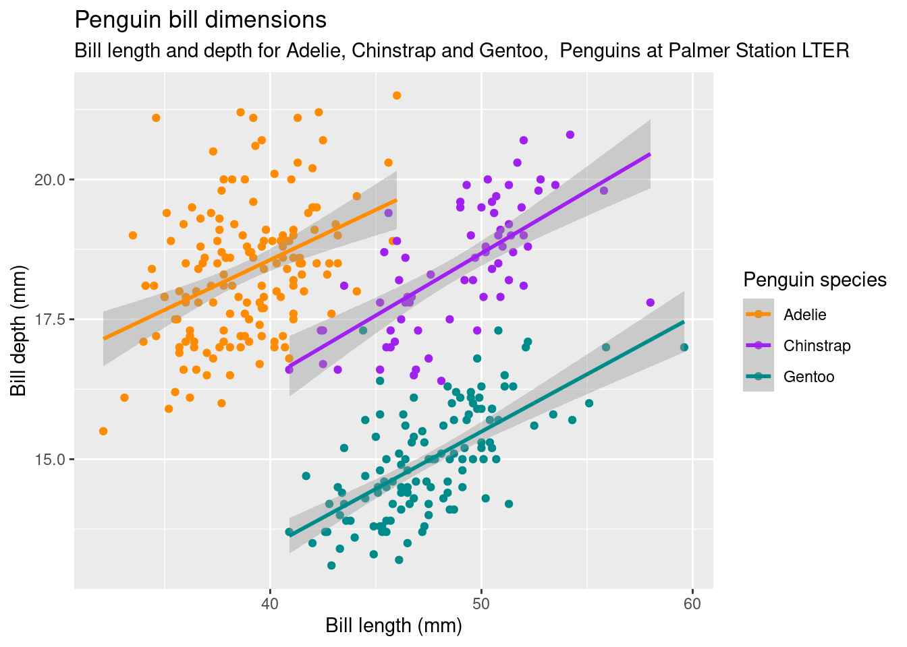
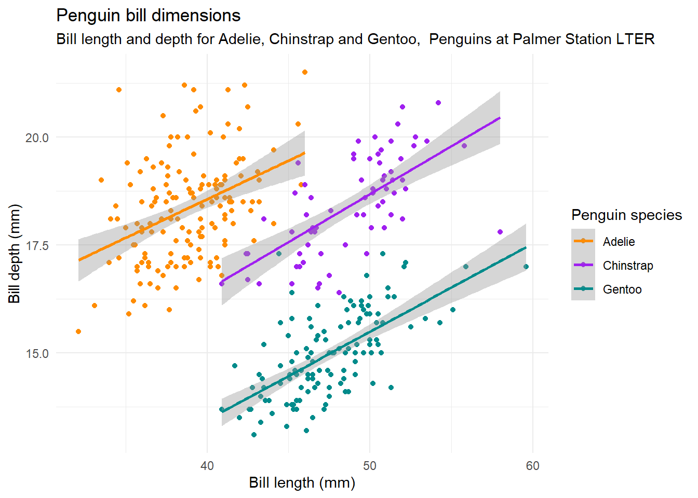

Visualizing data is useful explore the data and identify the relationship between different variables but also to communicate the analysis of the data and results. The ggplot2 package allows you to generate high quality plots in just a few steps. Any ggplot plot will have at least 3 components: the data, a coordinate system and a geometry (the visual representation of the data) and will be built in layers.
Let’s start by making plots!
First layer: the area of the graphic
The main function of ggplot2 is precisely ggplot() that allows us to start the graph and also define the global characteristics. The first argument of this function will be the data we want to visualize, always in a data.frame. In this case we use penguins.
The second argument is called mapping precisely because it maps or draws the axes of the graph and is always accompanied by the aes() function. The aes() function receives the aesthetic properties of the graph from the variables (or columns) of the data.frame we are using. In this case we indicate that in the x-axis we want to plot the variable bill_length_mm and in the y-axis the variable bill_depth_mm.
But this function alone is not enough, it only generates the first layer: the area of the graph.
ggplot(data = penguins, mapping = aes(x = bill_length_mm, y = bill_depth_mm))

Second layer: geometries
We need to add a new layer to our chart, the geometric elements or “geoms” that will represent the data. To do this we add a geom function, for example if we want to represent the data with points we will use geom_point().
ggplot(data = penguins, mapping = aes(x = bill_length_mm, y = bill_depth_mm)) +
geom_point()

We have our first!
You may have noticed that the dots are arranged almost like in groups. Perhaps some other variable explains this behavior.
To include information from other variables in our plot we can take advantage of the aesthetic characteristics of the geometries. In this case, we can “paint” the points according to the penguin species.
ggplot(data = penguins, mapping = aes(x = bill_length_mm, y = bill_depth_mm)) +
geom_point(aes(color = species))

Again, we use the aes() functions to map a variable in our data to an element of the plot. And aha! Each species of penguins has different characteristics!
Adding geometries
Very often it is not enough to look at the raw data to identify the relationship between variables; it is necessary to use some statistical transformation to highlight those relationships, either by fitting a model or calculating some statistics.
To solve this, ggplot2 has geoms that calculates and plot some common statistical transformations. Let’s try with geom_smoth() to fit a linear model to each specie.
ggplot(data = penguins, mapping = aes(x = bill_length_mm, y = bill_depth_mm)) +
geom_point(aes(color = species)) +
geom_smooth(aes(color = species), method = "lm")

By default geom_smooth() fits the data using the loess method (local linear regression) when there are less than 1000 data. But it is very common that you want to fit a global linear regression. In that case, you have to set method = “lm”.
Let’s talk about the look of the plot
For now we used the default ggplot looks. We could change the looks of your plot to use the style of the institution where we work, of the journal where we are going to publish it or simply to make it more eye-catching.
Let’s start with the color. To change the aesthetic appearance of a plot element, we add a new layer with the scale_* function. In this case we’ll use scale_color_manual() to choose the colors of the points manually. We could also use previously defined color palettes as Viridis or Color Brewer.
We’ll need 3 colors for the 3 species, let’s use “darkorange”, “purple” and “cyan4” following the beautiful visualizations made by Allison Horst.
ggplot(data = penguins, mapping = aes(x = bill_length_mm, y = bill_depth_mm)) +
geom_point(aes(color = species)) +
geom_smooth(aes(color = species), method = "lm") +
scale_color_manual(values = c("darkorange","purple","cyan4"))

We are getting there! Now, let’s add some text elements with a new ggplot layer: labs().
ggplot(data = penguins, mapping = aes(x = bill_length_mm, y = bill_depth_mm)) +
geom_point(aes(color = species)) +
geom_smooth(aes(color = species), method = "lm") +
scale_color_manual(values = c("darkorange","purple","cyan4")) +
labs(title = "Penguin bill dimensions",
subtitle = "Bill length and depth for Adelie, Chinstrap and Gentoo, Penguins at Palmer Station LTER",
x = "Bill length (mm)",
y = "Bill depth (mm)",
color = "Penguin species",
shape = "Penguin species")

Now the axes labels are more legible and we have a title and subtitle that explains what is the plot about.
We could keep changing this endlessly but we’ll finish with the general look of your plot.
The overall look of a plot is defined by its theme. ggplot2 has many themes available and for all tastes. But there are also other packages that extend the possibilities, for example ggthemes. By default ggplot2 uses theme_grey(), let’s try theme_minimal():
ggplot(data = penguins, mapping = aes(x = bill_length_mm, y = bill_depth_mm)) +
geom_point(aes(color = species)) +
geom_smooth(aes(color = species), method = "lm") +
scale_color_manual(values = c("darkorange","purple","cyan4")) +
labs(title = "Penguin bill dimensions",
subtitle = "Bill length and depth for Adelie, Chinstrap and Gentoo, Penguins at Palmer Station LTER",
x = "Bill length (mm)",
y = "Bill depth (mm)",
color = "Penguin species",
shape = "Penguin species") +
theme_minimal()

Now it’s your turn. Choose a theme you like and try it out. Also, if you can think of a better title modify it!
LS0tCnRpdGxlOiAiUGxvdHRpbmcgRGF0YSIKb3V0cHV0OiAKICBodG1sX2RvY3VtZW50OgogICAgY29kZV9kb3dubG9hZDogdHJ1ZQogICAgdG9jOiB0cnVlCiAgICB0b2NfZmxvYXQ6IGZhbHNlCiAgICBoaWdobGlnaHQ6IHRhbmdvCi0tLQoKYGBge3Igc2V0dXAsIGluY2x1ZGU9RkFMU0V9CmtuaXRyOjpvcHRzX2NodW5rJHNldCgKCWVjaG8gPSBUUlVFLAoJbWVzc2FnZSA9IEZBTFNFLAoJd2FybmluZyA9IEZBTFNFCikKbGlicmFyeSh0aWR5dmVyc2UpCgpwZW5ndWlucyA8LSByZWFkX2NzdigiZGF0YS9wZW5ndWlucy5jc3YiKQpgYGAKClZpc3VhbGl6aW5nIGRhdGEgaXMgdXNlZnVsIGV4cGxvcmUgdGhlIGRhdGEgYW5kIGlkZW50aWZ5IHRoZSByZWxhdGlvbnNoaXAgYmV0d2VlbiBkaWZmZXJlbnQgdmFyaWFibGVzIGJ1dCBhbHNvIHRvIGNvbW11bmljYXRlIHRoZSBhbmFseXNpcyBvZiB0aGUgZGF0YSBhbmQgcmVzdWx0cy4gVGhlICoqZ2dwbG90MioqIHBhY2thZ2UgYWxsb3dzIHlvdSB0byBnZW5lcmF0ZSBoaWdoIHF1YWxpdHkgcGxvdHMgaW4ganVzdCBhIGZldyBzdGVwcy4gQW55IGdncGxvdCBwbG90IHdpbGwgaGF2ZSBhdCBsZWFzdCAzIGNvbXBvbmVudHM6IHRoZSAqKmRhdGEqKiwgYSAqKmNvb3JkaW5hdGUgc3lzdGVtKiogYW5kIGEgKipnZW9tZXRyeSoqICh0aGUgdmlzdWFsIHJlcHJlc2VudGF0aW9uIG9mIHRoZSBkYXRhKSBhbmQgd2lsbCBiZSBidWlsdCBpbiBsYXllcnMuCgpMZXQncyBzdGFydCBieSBtYWtpbmcgcGxvdHMhCgojIyBGaXJzdCBsYXllcjogdGhlIGFyZWEgb2YgdGhlIGdyYXBoaWMKClRoZSBtYWluIGZ1bmN0aW9uIG9mIGdncGxvdDIgaXMgcHJlY2lzZWx5IGBnZ3Bsb3QoKWAgdGhhdCBhbGxvd3MgdXMgdG8gc3RhcnQgdGhlIGdyYXBoIGFuZCBhbHNvIGRlZmluZSB0aGUgZ2xvYmFsIGNoYXJhY3RlcmlzdGljcy4gVGhlIGZpcnN0IGFyZ3VtZW50IG9mIHRoaXMgZnVuY3Rpb24gd2lsbCBiZSB0aGUgZGF0YSB3ZSB3YW50IHRvIHZpc3VhbGl6ZSwgYWx3YXlzIGluIGEgZGF0YS5mcmFtZS4gSW4gdGhpcyBjYXNlIHdlIHVzZSBgcGVuZ3VpbnNgLgoKVGhlIHNlY29uZCBhcmd1bWVudCBpcyBjYWxsZWQgbWFwcGluZyBwcmVjaXNlbHkgYmVjYXVzZSBpdCBtYXBzIG9yIGRyYXdzIHRoZSBheGVzIG9mIHRoZSBncmFwaCBhbmQgaXMgYWx3YXlzIGFjY29tcGFuaWVkIGJ5IHRoZSBgYWVzKClgIGZ1bmN0aW9uLiBUaGUgYGFlcygpYCBmdW5jdGlvbiByZWNlaXZlcyB0aGUgYWVzdGhldGljIHByb3BlcnRpZXMgb2YgdGhlIGdyYXBoIGZyb20gdGhlIHZhcmlhYmxlcyAob3IgY29sdW1ucykgb2YgdGhlIGRhdGEuZnJhbWUgd2UgYXJlIHVzaW5nLiBJbiB0aGlzIGNhc2Ugd2UgaW5kaWNhdGUgdGhhdCBpbiB0aGUgeC1heGlzIHdlIHdhbnQgdG8gcGxvdCB0aGUgdmFyaWFibGUgYGJpbGxfbGVuZ3RoX21tYCBhbmQgaW4gdGhlIHktYXhpcyB0aGUgdmFyaWFibGUgYGJpbGxfZGVwdGhfbW1gLgoKQnV0IHRoaXMgZnVuY3Rpb24gYWxvbmUgaXMgbm90IGVub3VnaCwgaXQgb25seSBnZW5lcmF0ZXMgdGhlIGZpcnN0IGxheWVyOiB0aGUgYXJlYSBvZiB0aGUgZ3JhcGguCgpgYGB7cn0KZ2dwbG90KGRhdGEgPSBwZW5ndWlucywgbWFwcGluZyA9IGFlcyh4ID0gYmlsbF9sZW5ndGhfbW0sIHkgPSBiaWxsX2RlcHRoX21tKSkgCmBgYAoKIyMgU2Vjb25kIGxheWVyOiBnZW9tZXRyaWVzCgpXZSBuZWVkIHRvIGFkZCBhIG5ldyBsYXllciB0byBvdXIgY2hhcnQsIHRoZSBnZW9tZXRyaWMgZWxlbWVudHMgb3IgImdlb21zIiB0aGF0IHdpbGwgcmVwcmVzZW50IHRoZSBkYXRhLiBUbyBkbyB0aGlzIHdlIGFkZCBhIGdlb20gZnVuY3Rpb24sIGZvciBleGFtcGxlIGlmIHdlIHdhbnQgdG8gcmVwcmVzZW50IHRoZSBkYXRhIHdpdGggcG9pbnRzIHdlIHdpbGwgdXNlIGBnZW9tX3BvaW50KClgLgoKYGBge3J9CmdncGxvdChkYXRhID0gcGVuZ3VpbnMsIG1hcHBpbmcgPSBhZXMoeCA9IGJpbGxfbGVuZ3RoX21tLCB5ID0gYmlsbF9kZXB0aF9tbSkpICsKICBnZW9tX3BvaW50KCkKYGBgCgpXZSBoYXZlIG91ciBmaXJzdCEgCgpZb3UgbWF5IGhhdmUgbm90aWNlZCB0aGF0IHRoZSBkb3RzIGFyZSBhcnJhbmdlZCBhbG1vc3QgbGlrZSBpbiBncm91cHMuIFBlcmhhcHMgc29tZSBvdGhlciB2YXJpYWJsZSBleHBsYWlucyB0aGlzIGJlaGF2aW9yLiAKClRvIGluY2x1ZGUgaW5mb3JtYXRpb24gZnJvbSBvdGhlciB2YXJpYWJsZXMgaW4gb3VyIHBsb3Qgd2UgY2FuIHRha2UgYWR2YW50YWdlIG9mIHRoZSBhZXN0aGV0aWMgY2hhcmFjdGVyaXN0aWNzIG9mIHRoZSBnZW9tZXRyaWVzLiBJbiB0aGlzIGNhc2UsIHdlIGNhbiAicGFpbnQiIHRoZSBwb2ludHMgYWNjb3JkaW5nIHRvIHRoZSBwZW5ndWluIHNwZWNpZXMuIAoKYGBge3J9CmdncGxvdChkYXRhID0gcGVuZ3VpbnMsIG1hcHBpbmcgPSBhZXMoeCA9IGJpbGxfbGVuZ3RoX21tLCB5ID0gYmlsbF9kZXB0aF9tbSkpICsKICBnZW9tX3BvaW50KGFlcyhjb2xvciA9IHNwZWNpZXMpKQpgYGAKCkFnYWluLCB3ZSB1c2UgdGhlIGBhZXMoKWAgZnVuY3Rpb25zIHRvIG1hcCBhIHZhcmlhYmxlIGluIG91ciBkYXRhIHRvIGFuIGVsZW1lbnQgb2YgdGhlIHBsb3QuIEFuZCBhaGEhIEVhY2ggc3BlY2llcyBvZiBwZW5ndWlucyBoYXMgZGlmZmVyZW50IGNoYXJhY3RlcmlzdGljcyEKCiMjIEFkZGluZyBnZW9tZXRyaWVzCgpWZXJ5IG9mdGVuIGl0IGlzIG5vdCBlbm91Z2ggdG8gbG9vayBhdCB0aGUgcmF3IGRhdGEgdG8gaWRlbnRpZnkgdGhlIHJlbGF0aW9uc2hpcCBiZXR3ZWVuIHZhcmlhYmxlczsgaXQgaXMgbmVjZXNzYXJ5IHRvIHVzZSBzb21lIHN0YXRpc3RpY2FsIHRyYW5zZm9ybWF0aW9uIHRvIGhpZ2hsaWdodCB0aG9zZSByZWxhdGlvbnNoaXBzLCBlaXRoZXIgYnkgZml0dGluZyBhIG1vZGVsIG9yIGNhbGN1bGF0aW5nIHNvbWUgc3RhdGlzdGljcy4gCgpUbyBzb2x2ZSB0aGlzLCBnZ3Bsb3QyIGhhcyBnZW9tcyB0aGF0IGNhbGN1bGF0ZXMgYW5kIHBsb3Qgc29tZSBjb21tb24gc3RhdGlzdGljYWwgdHJhbnNmb3JtYXRpb25zLiBMZXQncyB0cnkgd2l0aCBgZ2VvbV9zbW90aCgpYCB0byBmaXQgYSBsaW5lYXIgbW9kZWwgdG8gZWFjaCBzcGVjaWUuIAoKYGBge3J9CmdncGxvdChkYXRhID0gcGVuZ3VpbnMsIG1hcHBpbmcgPSBhZXMoeCA9IGJpbGxfbGVuZ3RoX21tLCB5ID0gYmlsbF9kZXB0aF9tbSkpICsKICBnZW9tX3BvaW50KGFlcyhjb2xvciA9IHNwZWNpZXMpKSArCiAgZ2VvbV9zbW9vdGgoYWVzKGNvbG9yID0gc3BlY2llcyksIG1ldGhvZCA9ICJsbSIpCmBgYAoKQnkgZGVmYXVsdCBnZW9tX3Ntb290aCgpIGZpdHMgdGhlIGRhdGEgdXNpbmcgdGhlIGxvZXNzIG1ldGhvZCAobG9jYWwgbGluZWFyIHJlZ3Jlc3Npb24pIHdoZW4gdGhlcmUgYXJlIGxlc3MgdGhhbiAxMDAwIGRhdGEuIEJ1dCBpdCBpcyB2ZXJ5IGNvbW1vbiB0aGF0IHlvdSB3YW50IHRvIGZpdCBhIGdsb2JhbCBsaW5lYXIgcmVncmVzc2lvbi4gSW4gdGhhdCBjYXNlLCB5b3UgaGF2ZSB0byBzZXQgbWV0aG9kID0gImxtIi4KCiMjIExldCdzIHRhbGsgYWJvdXQgdGhlIGxvb2sgb2YgdGhlIHBsb3QgIAoKRm9yIG5vdyB3ZSB1c2VkIHRoZSBkZWZhdWx0IGdncGxvdCBsb29rcy4gV2UgY291bGQgY2hhbmdlIHRoZSBsb29rcyBvZiB5b3VyIHBsb3QgdG8gdXNlIHRoZSBzdHlsZSBvZiB0aGUgaW5zdGl0dXRpb24gd2hlcmUgd2Ugd29yaywgb2YgdGhlIGpvdXJuYWwgd2hlcmUgd2UgYXJlIGdvaW5nIHRvIHB1Ymxpc2ggaXQgb3Igc2ltcGx5IHRvIG1ha2UgaXQgbW9yZSBleWUtY2F0Y2hpbmcuIAoKTGV0J3Mgc3RhcnQgd2l0aCB0aGUgY29sb3IuIFRvIGNoYW5nZSB0aGUgYWVzdGhldGljIGFwcGVhcmFuY2Ugb2YgYSBwbG90IGVsZW1lbnQsIHdlIGFkZCBhIG5ldyBsYXllciB3aXRoIHRoZSBgc2NhbGVfKmAgZnVuY3Rpb24uIEluIHRoaXMgY2FzZSB3ZSdsbCB1c2UgYHNjYWxlX2NvbG9yX21hbnVhbCgpYCB0byBjaG9vc2UgdGhlIGNvbG9ycyBvZiB0aGUgcG9pbnRzIG1hbnVhbGx5LiBXZSBjb3VsZCBhbHNvIHVzZSBwcmV2aW91c2x5IGRlZmluZWQgY29sb3IgcGFsZXR0ZXMgYXMgVmlyaWRpcyBvciBDb2xvciBCcmV3ZXIuIAoKV2UnbGwgbmVlZCAzIGNvbG9ycyBmb3IgdGhlIDMgc3BlY2llcywgbGV0J3MgdXNlICJkYXJrb3JhbmdlIiwgInB1cnBsZSIgYW5kICJjeWFuNCIgZm9sbG93aW5nIHRoZSBiZWF1dGlmdWwgdmlzdWFsaXphdGlvbnMgbWFkZSBieSBBbGxpc29uIEhvcnN0LgoKYGBge3J9CmdncGxvdChkYXRhID0gcGVuZ3VpbnMsIG1hcHBpbmcgPSBhZXMoeCA9IGJpbGxfbGVuZ3RoX21tLCB5ID0gYmlsbF9kZXB0aF9tbSkpICsKICBnZW9tX3BvaW50KGFlcyhjb2xvciA9IHNwZWNpZXMpKSArCiAgZ2VvbV9zbW9vdGgoYWVzKGNvbG9yID0gc3BlY2llcyksIG1ldGhvZCA9ICJsbSIpICsKICBzY2FsZV9jb2xvcl9tYW51YWwodmFsdWVzID0gYygiZGFya29yYW5nZSIsInB1cnBsZSIsImN5YW40IikpIApgYGAKCldlIGFyZSBnZXR0aW5nIHRoZXJlISBOb3csIGxldCdzIGFkZCBzb21lIHRleHQgZWxlbWVudHMgd2l0aCBhIG5ldyBnZ3Bsb3QgbGF5ZXI6IGBsYWJzKClgLgoKYGBge3J9CmdncGxvdChkYXRhID0gcGVuZ3VpbnMsIG1hcHBpbmcgPSBhZXMoeCA9IGJpbGxfbGVuZ3RoX21tLCB5ID0gYmlsbF9kZXB0aF9tbSkpICsKICBnZW9tX3BvaW50KGFlcyhjb2xvciA9IHNwZWNpZXMpKSArCiAgZ2VvbV9zbW9vdGgoYWVzKGNvbG9yID0gc3BlY2llcyksIG1ldGhvZCA9ICJsbSIpICsKICBzY2FsZV9jb2xvcl9tYW51YWwodmFsdWVzID0gYygiZGFya29yYW5nZSIsInB1cnBsZSIsImN5YW40IikpICsKICBsYWJzKHRpdGxlID0gIlBlbmd1aW4gYmlsbCBkaW1lbnNpb25zIiwKICAgICAgIHN1YnRpdGxlID0gIkJpbGwgbGVuZ3RoIGFuZCBkZXB0aCBmb3IgQWRlbGllLCBDaGluc3RyYXAgYW5kIEdlbnRvbywgIFBlbmd1aW5zIGF0IFBhbG1lciBTdGF0aW9uIExURVIiLAogICAgICAgeCA9ICJCaWxsIGxlbmd0aCAobW0pIiwKICAgICAgIHkgPSAiQmlsbCBkZXB0aCAobW0pIiwKICAgICAgIGNvbG9yID0gIlBlbmd1aW4gc3BlY2llcyIsCiAgICAgICBzaGFwZSA9ICJQZW5ndWluIHNwZWNpZXMiKSAKYGBgCgpOb3cgdGhlIGF4ZXMgbGFiZWxzIGFyZSBtb3JlIGxlZ2libGUgYW5kIHdlIGhhdmUgYSB0aXRsZSBhbmQgc3VidGl0bGUgdGhhdCBleHBsYWlucyB3aGF0IGlzIHRoZSBwbG90IGFib3V0LiAKCldlIGNvdWxkIGtlZXAgY2hhbmdpbmcgdGhpcyBlbmRsZXNzbHkgYnV0IHdlJ2xsIGZpbmlzaCB3aXRoIHRoZSBnZW5lcmFsIGxvb2sgb2YgeW91ciBwbG90LiAKClRoZSBvdmVyYWxsIGxvb2sgb2YgYSBwbG90IGlzIGRlZmluZWQgYnkgaXRzIHRoZW1lLiBnZ3Bsb3QyIGhhcyBtYW55IHRoZW1lcyBhdmFpbGFibGUgYW5kIGZvciBhbGwgdGFzdGVzLiBCdXQgdGhlcmUgYXJlIGFsc28gb3RoZXIgcGFja2FnZXMgdGhhdCBleHRlbmQgdGhlIHBvc3NpYmlsaXRpZXMsIGZvciBleGFtcGxlIGdndGhlbWVzLiBCeSBkZWZhdWx0IGdncGxvdDIgdXNlcyBgdGhlbWVfZ3JleSgpYCwgbGV0J3MgdHJ5IGB0aGVtZV9taW5pbWFsKClgOgoKYGBge3J9CmdncGxvdChkYXRhID0gcGVuZ3VpbnMsIG1hcHBpbmcgPSBhZXMoeCA9IGJpbGxfbGVuZ3RoX21tLCB5ID0gYmlsbF9kZXB0aF9tbSkpICsKICBnZW9tX3BvaW50KGFlcyhjb2xvciA9IHNwZWNpZXMpKSArCiAgZ2VvbV9zbW9vdGgoYWVzKGNvbG9yID0gc3BlY2llcyksIG1ldGhvZCA9ICJsbSIpICsKICBzY2FsZV9jb2xvcl9tYW51YWwodmFsdWVzID0gYygiZGFya29yYW5nZSIsInB1cnBsZSIsImN5YW40IikpICsKICBsYWJzKHRpdGxlID0gIlBlbmd1aW4gYmlsbCBkaW1lbnNpb25zIiwKICAgICAgIHN1YnRpdGxlID0gIkJpbGwgbGVuZ3RoIGFuZCBkZXB0aCBmb3IgQWRlbGllLCBDaGluc3RyYXAgYW5kIEdlbnRvbywgIFBlbmd1aW5zIGF0IFBhbG1lciBTdGF0aW9uIExURVIiLAogICAgICAgeCA9ICJCaWxsIGxlbmd0aCAobW0pIiwKICAgICAgIHkgPSAiQmlsbCBkZXB0aCAobW0pIiwKICAgICAgIGNvbG9yID0gIlBlbmd1aW4gc3BlY2llcyIsCiAgICAgICBzaGFwZSA9ICJQZW5ndWluIHNwZWNpZXMiKSArCiAgdGhlbWVfbWluaW1hbCgpCmBgYAoKPiBOb3cgaXQncyB5b3VyIHR1cm4uIENob29zZSBhIHRoZW1lIHlvdSBsaWtlIGFuZCB0cnkgaXQgb3V0LiBBbHNvLCBpZiB5b3UgY2FuIHRoaW5rIG9mIGEgYmV0dGVyIHRpdGxlIG1vZGlmeSBpdCEK